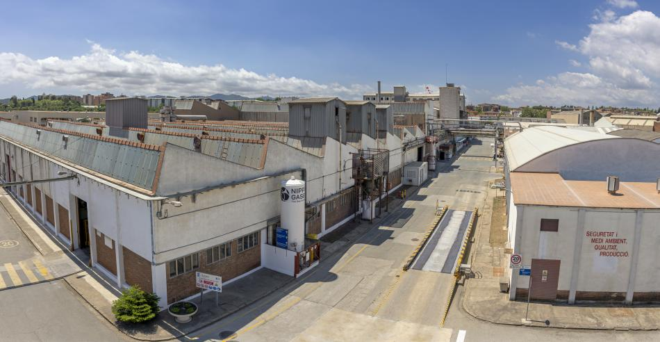

Cerdanyola s'adhereix al programa per a la lluita contra el
canvi climàtic.
La fàbrica de Ecros en Cerdanyola s'ha adherit al Programa d'acords voluntaris
per a la reducció de les emissions de gasos d'efecte d'hivernacle (GEI),
impulsat per l'Oficina del Canvi Climàtic de la Generalitat de Catalunya.
Amb la seva adhesió, Ecros es compromet a realitzar un seguiment de la seva emissió de
gasos d'efecte d'hivernacle i establir mesures per a reduir-les.

La fàbrica de Cerdanyola, fundada en 1963, on treballen unes 100 persones
dedicades a la producció de pólvores d'emmotllament termoestables (utilitzats en la fabricació de
material elèctric, accessoris per al lavabo i vaixelles), té en marxa el seu pla d'inversions
Pla 3D que inicia el camí cap a la descarbonització de la seva activitat i que,
entre altres, té l'objectiu de reduir en un 39% les emissions directes de CO₂ (2020 vs
2025).
Cerdanyola del Vallès ha aplicat la restricció de Zona de
Baixes Emissions
Recentment, Cerdanyola del Vallès ha aplicat la restricció de Zona de Baixes Emissions.
Això restringeix la circulació dels vehicles més contaminants en l'àmbit de la Zona de
Baixes Emissions durant els dies laborables, de dilluns a divendres, en horari de 7 a 20 h.
Els vehicles afectats poden sol·licitar autoritzacions diàries, que seran vàlides per a circular
dins de qualsevol ZBE de la metròpolis de Barcelona.

La ZBE té la finalitat de reduir la contaminació ambiental,
preservar i millorar la qualitat de l'aire i la salut pública,
disminuir els nivells de contaminació de la ciutat fins als nivells
recomanats per l'Organització Mundial de la Salut (OMS) i complir amb
els valors mínims de qualitat d'aire legalment establerts.
El ICTA-UAB ofereix el "Bojos pel Medi ambient 2025
El ICTA-UAB participa per sisè any consecutiu en el programa Bojos per la Ciència de la
Fundació
Catalunya La Pedrera. Enguany, el curs passa a dir-se Bojos pel Medi ambient amb l'objectiu
d'ajustar de forma més precisa el títol als continguts que s'abordaran al llarg de l'any.
El programa impartit pel ICTA-UAB acosta a un grup de joves als
grans reptes que haurà d'afrontar
la Terra durant el pròxim segle. Una vegada més, un grup de 24 estudiants de primer de
batxillerat
de Catalunya amb vocació i talent científic podran formar-se sobre l'entorn multidisciplinari
que
ofereixen
les ciències ambientals i la sostenibilitat per a resoldre problemes relacionats amb el medi ambient
,
la sostenibilitat i la protecció ambiental, el canvi climàtic, l'economia ecològica, l'economia
circular,
els sistemes socioecològics en la globalització, les bio-geociències marines i ambientals, la
biodiversitat,
els residus i altres.

L'objectiu principal d'aquest curs és el de fomentar les vocacions científiques i
promoure el coneixement i l'educació d'excel·lència dels joves de Catalunya.
Treballaran juntament amb investigadors per a experimentar com és la ciència en un centre de
recerca
internacional. També es duran a terme sortides de camp i visites a instal·lacions de
recerca.
Això els permetrà guanyar experiència pràctica en les últimes metodologies d'avantguarda i
posicionar-se
per a una possible carrera professional en la branca científica que hagin triat.
T'interessa saber com funciona el món que ens envolta? Com ens afecta el canvi climàtic?
Canvia el que respirem si som a la ciutat o a la muntanya? T'agradaria identificar si
els boscos per on andes són sans? T'has preguntat alguna vegada si mengem de manera
sostenible?
T'agradaria conèixer la biodiversitat que ens envolta?
Per als qui estan interessats en aquestes qüestions, l'Institut de Ciència i Tecnologia
Ambientals de la Universitat Autònoma de Barcelona (ICTA-UAB) ofereix un curs més el programa
Bojos pel Medi ambient. Els interessats poden inscriure's fins al pròxim 18 d'octubre
a
les 23.59 h.
Tornar a l'inici